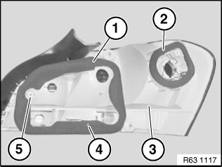

63 21 101 Replacing Sealing Frame for Left or Right Rear Light
63 21 101 Replacing Sealing Frame For Left Or Right Rear Light

Necessary preliminary work:
- Remove rear light

A hot air gun can be used as an aid if necessary.
Set temperature of gun to 70 °C.
Head adhesive area for about 1 min.
Detach sealing frame for rear light housing (1) and sealing frame for side wall (2) completely from rear light (3).
Clean bonding surface.
Installation note:
- Centre sealing frame for rear light housing (1) by means of guide (4) and reinforcement (5)
- Make sure sealing frame for rear light housing (1) and sealing frame for side wall (2) are correctly positioned on rear light (3)
- Make sure sealing frame for rear light housing (1) and sealing frame for side wall (2) are glued all round on rear light (3)